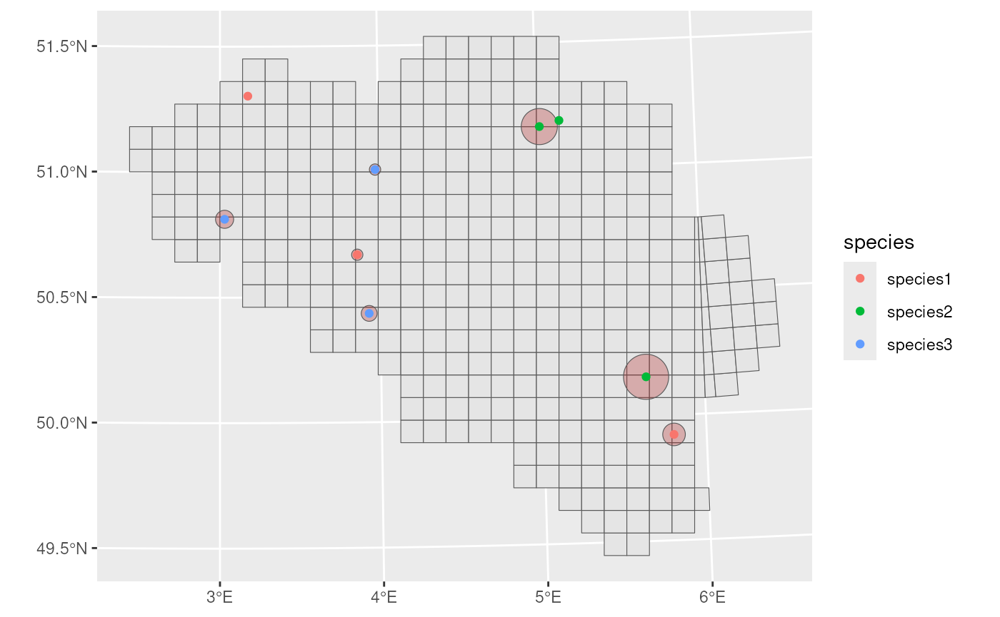
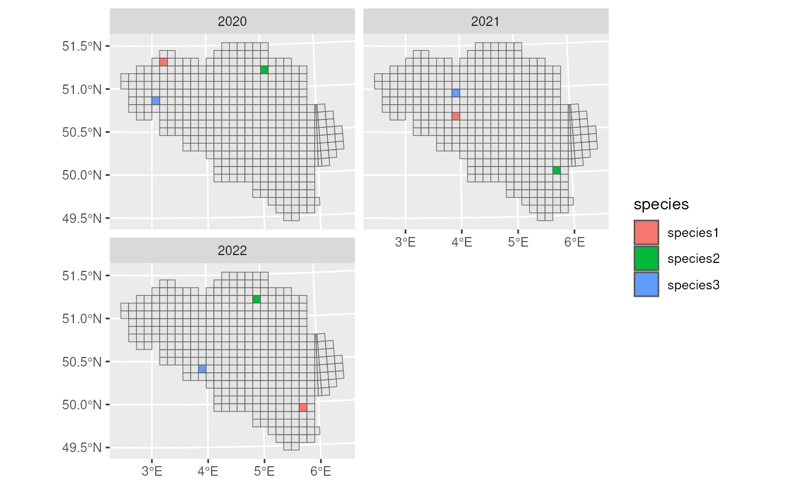

Grid designation for custom datasets
Source:vignettes/articles/custom-grid-designation.Rmd
custom-grid-designation.RmdThis tutorial explains how spatial grid designation is performed in ecological datasets using the gcube package. We begin with the theoretical foundations of generating random points within uncertainty buffers and follow with a practical example of applying a uniform grid to a real dataset. The method supports both projected and geographic coordinate reference systems, making it applicable beyond simulated data.
Method
To generate a point within a circle of radius around a central coordinate , we use polar coordinates and convert to Cartesian coordinates.
- Sample a random angle from the uniform distribution :
- Sample a random radius scaled by square root to ensure uniform point density:
- Convert to Cartesian coordinates:
Coordinate Reference System Considerations
The method of applying the above formula depends on the unit system of your CRS.
Projected CRS (e.g., UTM)
Projected systems use meters or other linear units, so the polar formula can be applied directly.
| Quantity | Formula |
|---|---|
| offset | |
| offset |
This is the most accurate and straightforward method and should be used whenever your data are in a projected CRS.
Geographic CRS (e.g., WGS84)
Geographic systems use degrees, not meters. Therefore, the uncertainty radius in meters must be converted to degrees using approximations based on latitude:
- 1 degree of latitude ≈ 111,320 meters
- 1 degree of longitude ≈ meters
Use these formulas to convert meters to degrees:
| Quantity | Formula |
|---|---|
| Latitude offset | |
| Longitude offset |
These are approximations and may introduce distortion, especially at high latitudes.
⚠️ Tip: Always prefer using a projected CRS (like UTM) for grid designation when available. This minimizes distortion and simplifies calculations. Use geographic CRS (e.g., WGS84) only if your dataset explicitly requires it or no projected CRS is available.
Getting started with gcube
In this example, we show how gcube can be used to perform grid designation on a custom ecological dataset.
# Load packages
library(gcube)
library(frictionless) # Load example dataset
library(ggplot2) # Data visualisation
library(dplyr) # Data wrangling
library(sf) # Working with spatial dataGet example data
As reference grid, we load the the MGRS grid at 10 km scale from the b3data data package.
# Read data from repository
mgrs10_belgium <- st_read(
"https://zenodo.org/records/15211029/files/mgrs10_refgrid_belgium.gpkg",
quiet = TRUE
)
head(mgrs10_belgium)
#> Simple feature collection with 6 features and 1 field
#> Geometry type: POLYGON
#> Dimension: XY
#> Bounding box: xmin: 460000.1 ymin: 5620000 xmax: 480000.1 ymax: 5670000
#> Projected CRS: WGS 84 / UTM zone 31N
#> mgrscode geom
#> 1 31UDS65 POLYGON ((470000.1 5651000,...
#> 2 31UDS66 POLYGON ((470000.1 5661000,...
#> 3 31UDS72 POLYGON ((480000 5621000, 4...
#> 4 31UDS73 POLYGON ((480000.1 5631000,...
#> 5 31UDS74 POLYGON ((480000.1 5641000,...
#> 6 31UDS75 POLYGON ((480000.1 5651000,...Consider the following synthetic observation dataset with three species observed across three different years. Each row represents a record with spatial coordinates and an associated uncertainty in meters. Both the reference grid and observation data use the same projected CRS, which ensures that distances and buffer sizes are accurately computed.
# Simulate 9 observation records: 3 species x 3 years
example_data <- data.frame(
species = rep(c("species1", "species2", "species3"), each = 3),
time_point = rep(2020:2022, times = 3),
lat = c(
5683521, 5613261, 5533663,
5672768, 5559184, 5670045,
5628962, 5651001, 5587280
),
long = c(
512309.4, 560722.6, 700880.4,
649960.8, 688510.1, 641283.4,
502044.7, 568593.9, 566011.5
),
coordinateUncertaintyInMeters = c(
1000, 2500, 5000,
1500, 10000, 8000,
4000, 2500, 3500
)
) %>%
st_as_sf(coords = c("long", "lat"), crs = st_crs(mgrs10_belgium))
example_data
#> Simple feature collection with 9 features and 3 fields
#> Geometry type: POINT
#> Dimension: XY
#> Bounding box: xmin: 502044.7 ymin: 5533663 xmax: 700880.4 ymax: 5683521
#> Projected CRS: WGS 84 / UTM zone 31N
#> species time_point coordinateUncertaintyInMeters geometry
#> 1 species1 2020 1000 POINT (512309.4 5683521)
#> 2 species1 2021 2500 POINT (560722.6 5613261)
#> 3 species1 2022 5000 POINT (700880.4 5533663)
#> 4 species2 2020 1500 POINT (649960.8 5672768)
#> 5 species2 2021 10000 POINT (688510.1 5559184)
#> 6 species2 2022 8000 POINT (641283.4 5670045)
#> 7 species3 2020 4000 POINT (502044.7 5628962)
#> 8 species3 2021 2500 POINT (568593.9 5651001)
#> 9 species3 2022 3500 POINT (566011.5 5587280)We visualise the data with uncertainty circles.
# Create sf object with uncertainty circles
buffered_observations <- st_buffer(
example_data,
example_data$coordinateUncertaintyInMeters
)
# Visualise
ggplot() +
geom_sf(data = mgrs10_belgium) +
geom_sf(data = buffered_observations,
fill = alpha("firebrick", 0.3)) +
geom_sf(data = example_data, aes(colour = species))
Grid designation
To perform grid designation, we iterate over each species, filter the
corresponding observations, and apply grid_designation() to
generate a species-specific data cube.
For improved performance, especially with larger datasets, consider
using vectorized approaches such as lapply() or
purrr::map() instead of explicit loops.
# Get species
taxa <- sort(unique(example_data$species))
# Create empty list
occurrence_cube_list <- vector(mode = "list", length = length(taxa))
# Loop over species
for (i in seq_along(taxa)) {
# Get species
taxon <- taxa[i]
# Filter data
taxon_data <- example_data %>%
filter(taxon == species)
# Perform grid designation
taxon_cube <- grid_designation(
observations = taxon_data,
grid = mgrs10_belgium,
seed = 123
)
# Add species column
taxon_cube$species <- taxon
# Add species cube to list
occurrence_cube_list[[i]] <- taxon_cube
}
# Combine species cubes
occurrence_cube_full <- bind_rows(occurrence_cube_list)We select the occupied grid cells.
We visualise the final occurrence cube. Since we have only three species occurrences per year spread over the whole grid, we see three occupied grid cells per year.
ggplot(occurrence_cube_df) +
geom_sf(data = mgrs10_belgium) +
geom_sf(aes(fill = species)) +
facet_wrap(~time_point, nrow = 2)